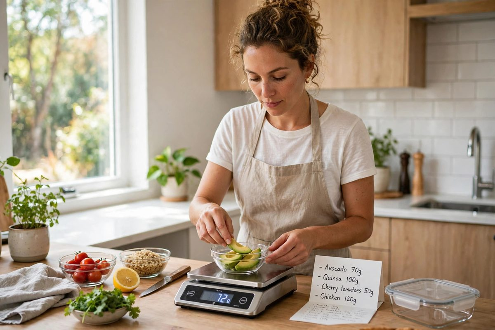

Maintenance Calories: A Guide
How to find the calories that keep your weight steady, and how to eat at maintenance without counting forever.
Maintenance calories are the number of calories that keeps your weight steady: not losing, not gaining. Finding that number is useful even if you never want to lose weight, because it tells you how much you can eat without slowly gaining over the years. It is also the number every weight-loss or weight-gain plan starts from. This guide explains how to find it and how to live at it.
What maintenance means
Maintenance is the point where the energy you eat matches the energy you burn. Your body burns energy at rest, through movement, through exercise, and through digestion, and the total is your total daily energy expenditure, or TDEE. Eat at TDEE and your weight stays steady, allowing for daily fluctuations of a kilogram or so with water and food. Eat above it and you gain; eat below it and you lose. The number is personal: it depends on your size, age, sex, muscle mass and activity.
Finding your maintenance number
Start with the calculator: enter your age, sex, weight, height and activity level, and it estimates your TDEE. Then test it. Eat at that number for two to three weeks, weigh yourself weekly under the same conditions, and see what happens. If your weight is steady, the estimate is right. If it rises, the estimate is high, and you should eat 100 to 200 calories less. If it falls, the estimate is low, and you should eat a little more. Your body's response is the real measurement; the calculator is the starting guess.
Eating at maintenance without counting
Once you know your maintenance number, you do not need to count every day. Learn what a day at maintenance looks like: the portions, the meals, the snacks. Then eat in that pattern most days, and weigh yourself weekly as a check. If your weight creeps up over a month, trim portions slightly or add a daily walk. If it creeps down, add a snack. This light-touch approach works because it uses the scales as a feedback loop rather than a daily ledger, and it is sustainable for years.
Why maintenance drifts over time
Maintenance is not a fixed number. It falls as you age and lose muscle, rises if you build muscle or become more active, and changes with the seasons if your routine changes. A holiday, a new job, or an injury can shift it by hundreds of calories. That is why a weekly weigh-in matters even when you are not trying to change weight: it catches drift early, when a small correction is enough. Recalculate your TDEE every few months or after any big change in routine.
Maintenance after weight loss
After losing weight, maintenance is lower than it was before, because a lighter body burns less energy. Someone who loses 10 kg may need 150 to 200 fewer calories a day to stay at the new weight. This is the main reason weight returns after a diet: people go back to eating the old maintenance number, which is now a surplus. The fix is to find the new maintenance number by testing, and to keep the habits that lost the weight: regular weighing, daily movement, and a rough sense of portions. Maintenance is not the end of the plan; it is the plan.
Finding maintenance by experiment
Take a person whose calculator estimate is 2,200 calories a day. They eat 2,200 a day for three weeks, weighing themselves weekly. Week one they are 80.0 kg, week two 80.2 kg, week three 79.9 kg: the weight is steady, so the estimate is right, and 2,200 is their maintenance. If they had gained 0.5 kg over the three weeks, the estimate would be high by about 100 calories, and their maintenance would be about 2,100. If they had lost 0.5 kg, it would be low, and maintenance would be about 2,300. The experiment is simple, it takes three weeks, and it replaces a guess with a measurement. Repeat it whenever your routine changes, and your maintenance number stays honest.
Frequently Asked Questions
How do I find my maintenance calories?
Estimate your TDEE with the calculator, eat at that number for two to three weeks, and adjust by 100 to 200 calories from what the scales do.
What happens if I eat above maintenance?
You gain weight, slowly at first. A surplus of 100 calories a day is about 5 kg in a year, which is why small drift matters.
Do I need to count calories at maintenance?
Not every day. Learn what a maintenance day looks like, eat in that pattern, and weigh yourself weekly as a check.